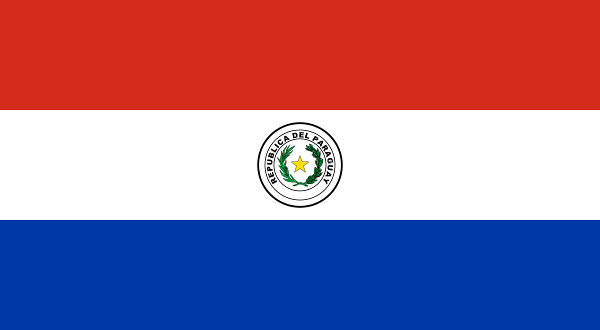

Segundo Congreso Internacional de
Comunicación y protocolo 2019
Es uno de los eventos sobre comunicación y protocolo más imporatante del Perú.
En esta, 2da edición en CICP ofreció a sus asistentes una experiencia única, donde se desarrollan
conferencias, charlas y actividades complementarias referentes al entorno del Protocolo. En
esta edición el CICP se desarrolló en el Salón de los espejos de la municipalidad de Lima los días 23,24 y 25 de
Octubre
Alexis Fernandez
Diplomado universitario en Logista Organizativa, Imagen y Ceremonial por el Centro Interdiciplinario de Estudios Culturales de Argentina.

Andrea Morales
Docente de la Univerdidad Israel, Licenciada en RR.PP. y Comunicación Organizacional.

Dr. Enrique Noria

- - Magister en Diplomacia y Relaciones Internacionales.
- - Consejero en el Servicio Diplomático de la República
Esther Salazar
Licenciada en Historia por la UNMSM con especialidad en RR.PP. por la USMP.
Jose Enrique Finol

Doctor en Ciencias de la Información y la Comunicación de la Escuela de Altos Estudios en Ciencias Sociales (EHESS) Paris, Francia.
Georgette E. Bretel
.svg.png)
Docente de la Academia Diplomática de Bolivia.
Guy O. Vanackeren
.svg.png)
Gerente de Aventura Latinoamericana y Presidente Fundador de la Cámara de Comercio y Cultura de Bélgica.
Mg. Jose Manuel Mesa

Responsable de Protocolo y Relaciones Institucionales del Ayuntamiento de San Bartolomé de Tirajana, Gran Canaria.
Juan Manuel Suanzes
Subdirector General de Protocolo y Ceremonial del Estado del Departamento de Protocolo de la Presidencia del Gobierno, España.
Maikel Arista-Salado
Abogado de profesión. Investigador y articulista de protocolo, vexilología, heráldica y medallistica.
Dra. María Aparecida Ferrari
Fundadora y asociada de la Asociación Brasileña de Investigadores en Comunicación Organizacional.
Miguel Antezana
Master en Administracipon de Empresas por la Universidad Politécnica de Madrid.
Pedro Vásquez Indacochea
Magister en Gerencia Social y Máster en Gestión de Riesgos.

Rocío Ames
Consultora y Especialista Internacional de Marca Personal, Presencia y Networking.

Ana Cecilia Prado Salazar
Presidente de la Asociación Peruana de Ceremonialistas (APCER).
Viviana Mongelós
Coordinadora de Protocolo y Ceremonial de la Corte Suprema de Justicia de Paraguay.
| Jueves 21 de Noviembre | Viernes 22 de Noviembre | Sábado 23 de Noviembre | |||
|---|---|---|---|---|---|
| 8:30 a 9:00 h. | Registro de inscripciones | 8:30 a 9:00 h. | Registro de participantes | 8:30 a 9:00 h. | Registro de participantes |
| 9:00 a 9:20 h. |
Acto inagural Mg. Ana Cecilia Prado Salazar |
9:00 a 9:20 h. |
Conferencia Internacional (Bélgica)
Guy Vaneckeren.
|
9:00 a 9:20 h. |
Ponencia Nacional
Lic. Esther Salazar Ramírez
|
| 9:20 a 10:00 h. |
Conferencia Inaugural (España)
Ms. Juan Manuel Suanzés Lobo
|
9:40 a 10:20 h. |
Conferencia internacional (Brasil)
Dra. María Aparecida Ferrari
|
9:30 a 10:00 h. |
Ponencia Nacional
Prof. Wilfredo Pérez Ruíz
|
| 10:00 a 10:40 h. |
Conferencia internacional (Venezuela)
Dr. José Enrique Finol
|
10.20 a 10.50 h. |
Ponencia nacional
Ms. Pedro Vásquez Indacochea
|
10.00 a 10.30 h. |
Ponencia Internacional (Uruguay)
Alexis Fernández Quinteros
|
| 10:40 a 11:10 h. |
Conferencia nacional
Mg. Enrique Noria Freyre
|
10:50 a 11.20 h. |
Ponencia nacional
Ms. Giuliana Pantoja Chihuan
|
10.30 a 10.50 h. |
Ponencia Internacional (Ecuador)
Andrea Salomé Morales Galarraga
|
| 11:10 A 11:20 h. |
Ronda de preguntas. |
11:20 a 11:30 h. |
Ronda de preguntas. |
10.50 a 11.00 h. |
Ronda de preguntas. |
| 11.20 a 11.40 h |
PAUSA 20’ CAFÉ |
11.30 a 11.50 h. |
PAUSA 20’ CAFÉ |
11.00 a 11.20 h. |
PAUSA 20’ CAFÉ |
| 11.40 a 12.10 h. |
Ponencia Nacional
Abg. Isabel Zárate Ruíz
|
11.50 a 12.20 h. |
Ponencia Internacional (Bolivia)
Georgette Brettel |
11:20 a 12:00 h. |
Ponencia nacional
Ms. Rocío Ames |
| 12.10 a 12.40 h. |
Ponencia Internacional (España)
Mg. José Manuel Mesa Göbel
|
12.20 a 12.50 h. |
Ponencia Internacional (Cuba)
Lic. Mikel Arista Salado
|
12:00 a 12:30 h. |
Conferencia Nacional
Ms. Miguel Antezana
|
| 12.40 a 13.10 h. |
Ponencia Internacional (Argentina)
Cristian Baquero Lazcano
|
12.50 a 13.10 h. |
Ponencia Internacional (Argentina)
Cristian Baquero Lazcano
|
12:30 a 13:10 h. |
Ponencia Nacional
Mg. Ana Cecilia Prado Salaza
|
| 13.10 a 13.40 h. |
Ponencia Internacional (Cuba)
Dr. Avelino Couceiro |
13.10 a 13.30 h. |
Ponencia Internacional (Paraguay)
Abog. Viviana Mongelos
|
13.10 a 13.20 h |
Clausura del Congreso. |
| 13.40 a 13.50 h. |
Ronda de preguntas. |
11.20 a 11.30 h. |
Ronda de preguntas. |
||
| 13.50 a 14.30 h |
Cóctel de bienvenida |
Tarde libre. |
|||